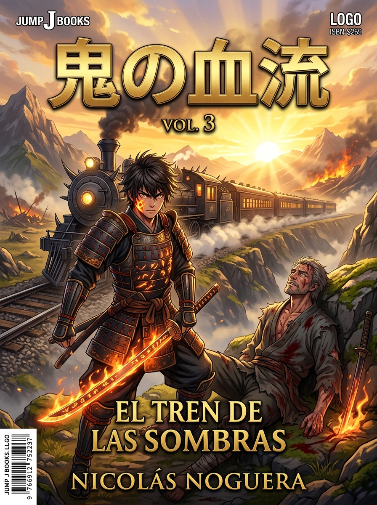
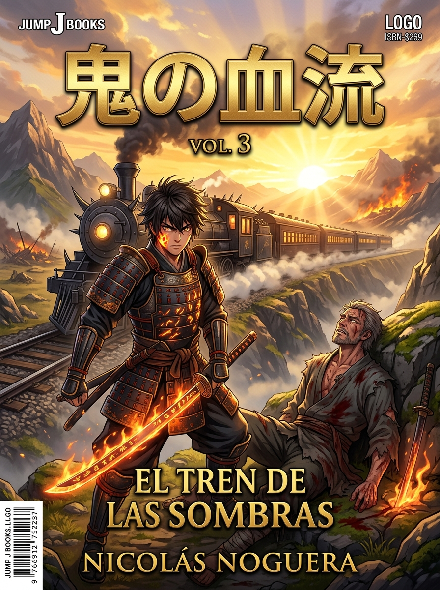

MANGA / LIGHT NOVEL
Oni no Ketsuryū (鬼の血流 - La Estirpe de la Sangre)
La batalla en el Tren Demoníaco. El choque del Pilar del Fuego contra el Tercer Lunar. Y el legado sagrado de la Respiración del Sol.
El Tren de las Sombras se ha convertido en una masa viva de carne demoníaca. Ren, Miyuki y el joven del haori de rayos combinan sus estilos para cortar el núcleo de la caldera, pero tras el descarrilamiento, el aterrador Akaza —Tercer Lunar Rojo— emerge del bosque.
$20.00 USD
COMPRAR AHORA ($20 USD)
Contenido del Volumen 3
- Capítulo 1: La Carne del Tren (Escenas 1-3)
- Capítulo 2: El Cuello de Hierro (Escenas 1-3)
- Capítulo 3: La Llegada del Tercer Lunar (Escenas 1-3)
- Capítulo 4: La Última Llama (Escenas 1-3)
- Capítulo 5: La Herencia del Fuego (Clímax del Volumen 3 - Escenas 1-3)
Ilustraciones Interiores Destacadas
